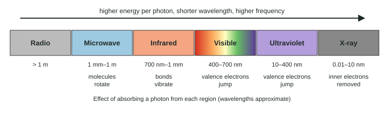

Spectroscopy and the Electromagnetic Spectrum
Electromagnetic radiation ranges from radio waves to X-rays; shorter wavelengths carry more energy per photon.
Part 1 · Hook
Why this matters
Part 2 · Before you start
What this builds on
Part 3 · Prerequisite check
Quick check before you start
1. In photoelectron spectroscopy, what does a photon do to an atom?
- Knocks out an electron
- Splits the nucleus
- Adds a proton
Show the answer
A high-energy photon can remove an electron from an atom.
- Correct: Knocks out an electron:
- Splits the nucleus:
- Adds a proton:
2. Which bond is polar?
- O–H
- H–H
- N≡N
Show the answer
O and H differ in electronegativity.
- Correct: O–H:
- H–H:
- N≡N:
Part 4 · See it
See it first

Part 5 · Step by step
How it works, step by step
- Shorter-wavelength light carries more energy per photonradio < microwave < infrared < visible < ultraviolet < X-ray in energy
- Molecules hold energy in fixed levels: rotation (small gaps), vibration (medium), electronic (large)a photon is absorbed only if its energy matches a gap
- Each region matches a different kind of gapmicrowaves rotate molecules, infrared vibrates bonds, visible and UV light promote electrons
- The levels depend on the atoms and bonds presentabsorption spectra identify substances
Part 6 · Key ideas
Key ideas
- Shorter wavelength, higher frequency, more energy per photon.
- Microwave: rotation. Infrared: vibration. Visible and UV: electronic transitions. X-ray: core electrons removed.
- A photon is absorbed only if its energy matches the gap between two levels.
- A colored substance absorbs some visible light; we see the light it does not absorb.
Part 7 · Misconception
A common mistake
The wrong idea: Brighter light of any color can always push an electron to a higher level, if there is enough of it.
What actually happens: Each photon must carry energy matching the gap. Many low-energy photons cannot add up to one electronic transition.
Part 8 · Check yourself
Check yourself
Exam-style questions. Anything you miss goes into your review queue.
Graph
Infrared spectrum of an unknown liquid
The percent of infrared light transmitted through an unknown liquid. Dips show wavenumbers that are absorbed. Typical absorptions: O–H stretch 3,200–3,550 cm⁻¹ (broad); C–H stretch 2,850–3,000 cm⁻¹; C=O stretch 1,680–1,750 cm⁻¹; C–O stretch 1,000–1,300 cm⁻¹. Higher wavenumber means higher energy.
Data table
| Wavenumber (cm⁻¹) | Unknown |
|---|---|
| 1000 | 75.9 |
| 1100 | 75.9 |
| 1200 | 98 |
| 1300 | 98 |
| 1400 | 92.8 |
| 1500 | 92.8 |
| 1600 | 98 |
| 1700 | 98 |
| 1800 | 98 |
| 1900 | 98 |
| 2000 | 98 |
| 2100 | 98 |
| 2200 | 98 |
| 2300 | 98 |
| 2400 | 98 |
| 2500 | 98 |
| 2600 | 98 |
| 2700 | 98 |
| 2800 | 97.9 |
| 2900 | 75.4 |
| 3000 | 73.9 |
| 3100 | 87.7 |
| 3200 | 63 |
| 3300 | 33.2 |
| 3400 | 33.2 |
| 3500 | 63 |
| 3600 | 87.8 |
| 3700 | 96.4 |
| 3800 | 97.9 |
| 3900 | 98 |
| 4000 | 98 |
1. What happens in the molecules when they absorb the light at about 3,350 cm⁻¹?
- An O–H bond vibrates more strongly.
- An electron moves to a higher energy level.
- The molecule rotates faster.
- An inner electron is removed.
Show the answer
Infrared photons match the energy gaps between vibrational levels. The broad dip near 3,350 cm⁻¹ is in the O–H stretch range.
- Correct: An O–H bond vibrates more strongly.: Right: IR excites vibrations; this one is O–H.
- An electron moves to a higher energy level.: Electronic transitions need visible or UV photons, which carry more energy.
- The molecule rotates faster.: Rotation is changed by lower-energy microwaves.
- An inner electron is removed.: Removing core electrons needs X-ray photons.
2. Which compound is the unknown most likely to be?
- Ethanol, CH₃CH₂OH
- Acetone, (CH₃)₂C=O
- Hexane, C₆H₁₄
- Water, H₂O
Show the answer
The spectrum shows O–H (about 3,350), C–H (about 2,950) and C–O (about 1,050 cm⁻¹) absorptions, and no C=O near 1,700. Ethanol has all three bonds and no C=O.
- Correct: Ethanol, CH₃CH₂OH: Right: O–H, C–H and C–O, no C=O.
- Acetone, (CH₃)₂C=O: Acetone would show a strong C=O dip near 1,700 cm⁻¹, which is missing.
- Hexane, C₆H₁₄: Hexane has no O–H or C–O bonds, so it would lack the dips at 3,350 and 1,050 cm⁻¹.
- Water, H₂O: Water has no C–H bonds, so it would lack the dip near 2,950 cm⁻¹.
Graph
Visible absorption of a dye solution
How strongly a dye solution absorbs light across the visible spectrum, on a relative scale where higher means more light of that wavelength is absorbed. Colors: violet 400–450 nm, blue 450–495, green 495–570, yellow 570–590, orange 590–620, red 620–700 nm.
Data table
| Wavelength (nm) | Dye |
|---|---|
| 400 | 0.05 |
| 420 | 0.05 |
| 440 | 0.05 |
| 460 | 0.05 |
| 480 | 0.05 |
| 500 | 0.05 |
| 520 | 0.05 |
| 540 | 0.05 |
| 560 | 0.07 |
| 580 | 0.16 |
| 600 | 0.46 |
| 620 | 0.83 |
| 640 | 0.83 |
| 660 | 0.46 |
| 680 | 0.16 |
| 700 | 0.07 |
3. At which wavelength does the dye absorb most strongly?
- About 450 nm
- About 540 nm
- About 630 nm
- About 700 nm
Show the answer
The absorption peaks near 630 nm, in the red-orange part of the spectrum.
- About 450 nm: Absorption there is close to zero.
- About 540 nm: Absorption there is low.
- Correct: About 630 nm: Right: the peak of the curve.
- About 700 nm: Absorption has fallen far from its peak by 700 nm.
4. What color does the dye solution appear?
- Blue, because it absorbs red-orange light.
- Red, because it absorbs red light most strongly.
- Black, because it absorbs light across the visible spectrum.
- Colorless, because it absorbs just one narrow band.
Show the answer
We see the light that is not absorbed. Absorbing red-orange light near 630 nm leaves mostly blue and violet light to pass through, so the solution looks blue.
- Correct: Blue, because it absorbs red-orange light.: Right: the transmitted light sets the color.
- Red, because it absorbs red light most strongly.: A substance shows the color it does not absorb.
- Black, because it absorbs light across the visible spectrum.: It absorbs little below 550 nm.
- Colorless, because it absorbs just one narrow band.: Absorbing a strong band of visible light gives a color.
5. What happens to a dye molecule when it absorbs a 630 nm photon?
- An electron moves from a lower energy level to a higher one.
- A bond in the molecule vibrates with more energy.
- The molecule rotates faster about its center.
- A covalent bond breaks and the molecule falls apart.
Show the answer
Visible photons carry enough energy to match electronic energy gaps, so an electron is promoted to an excited state.
- Correct: An electron moves from a lower energy level to a higher one.: Right: an electronic transition.
- A bond in the molecule vibrates with more energy.: Vibrations are excited by lower-energy infrared light.
- The molecule rotates faster about its center.: Rotation is excited by microwaves.
- A covalent bond breaks and the molecule falls apart.: Visible light excites the electron; the molecule stays intact.
6. Which pairings of a type of radiation with the change it causes in a molecule are correct? Select all that apply.
- Microwave: faster rotation
- Infrared: more bond vibration
- Ultraviolet: faster rotation
- Visible: more bond vibration
- Ultraviolet: electrons promoted to higher levels
- Radio: inner electrons removed
Show the answer
Microwaves match rotational gaps, infrared vibrational gaps, and visible or ultraviolet light electronic gaps.
- Correct: Microwave: faster rotation: Right: microwaves match rotational gaps.
- Correct: Infrared: more bond vibration: Right: infrared matches vibrational gaps.
- Ultraviolet: faster rotation: UV photons carry far more energy than rotational gaps; they cause electronic transitions.
- Visible: more bond vibration: Visible light causes electronic transitions, not vibrations.
- Correct: Ultraviolet: electrons promoted to higher levels: Right: UV matches electronic gaps.
- Radio: inner electrons removed: Radio photons carry the least energy; removing core electrons needs X-rays.
Part 9 · Summary
Summary
Part 10 · Up next
What comes next
Part 11 · Connections